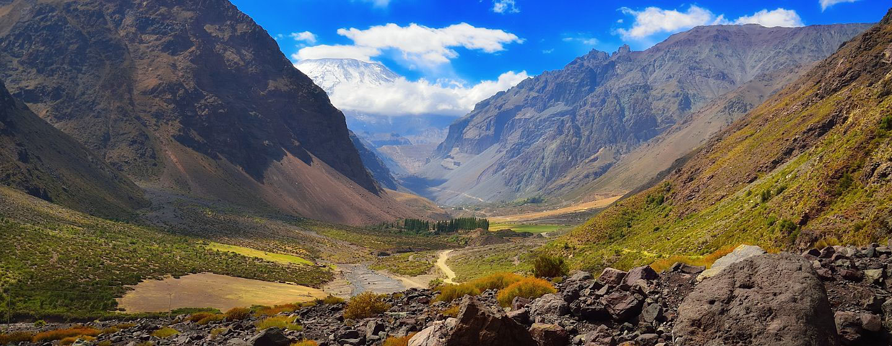

Metodología
Cajón Histórico
Proyecto
A lo largo de los años se han asentado variadas comunidades a la rivera del Río Maipo. Cada una de estas se acercaba a la zona por diversos motivos: La extracción de cobre, en el caso del Villorrio El Volcán o la lejanía en caso del monasterio de Carmelitas descalzas o la casa de salud Carolina Deusther.
Cajón Histórico, es un proyecto sobre Rescate Patrimonial y tiene como objetivo reunir estos hitos, sumados a las historias contadas boca en boca por los habitantes, para fundir el valor objetivo y la memoria colectiva en un solo gran proyecto.
Metodología de trabajo